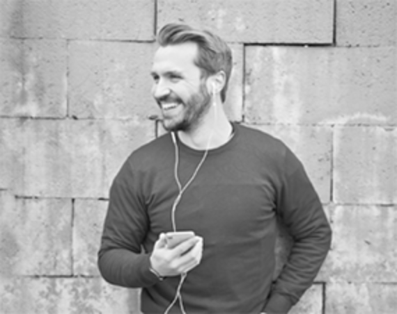

Освойте английский для путешествий и научитесь объясняться в любой ситуации
Бывали ли вы в подобных ситуациях?
01
Вы думали, что знаете английский, но в гостинице с трудом выговариваете какой номер вам нужен
02
Вы смогли спросить, до какой станции метро нужно дойти, но не поняли, куда вас отправили
03
В аэропорту при любом подозрении на задрежку, вы ищите представителя, хоть как-то говоряшего по-русски
В итоге ...
Всё это портит впечатление от отдыха и отбивает желание посещать новые страны
Мы предусмотрели эти ситуации
Значение
Разбираем те ситуации, с которыми сталкивается путешественник
Понимание
Учим объясняться сами и понимать, что говорят другие
Практика
Проводим диалоги с преподавателями и носителями языка
Кто ведёт курс
Алла Ристовская
Занимается преподаванием английского языка с 2007 года. За 7 лет практики Алла занималась более чем с 80 студентами. Очень любит путешествовать: неоднократно бывала зарубежом, проходила практику в США (Нью-Йорк) и Великобритании (Лондон).
Анастасия Левчук
Закончила Алтайскую Государственную педагогическую Академию по специальности "теория и методика преподавания иностранных языков и культур". Также имеется дополнительная квалификация "переводчик в сфере профессиональной коммуникации".

Евгений Пак
Сетифицированный спеуиалист (диплом ОмГПУ, TTC в Кембридже, TESOL в Лондоне). Имеет богатый опыт работы на английском языке: от обучения в языковых школах до выполнения функции переводчика на различных конференциях. Более года Евгений жил в г. Сиэтл (США).
Что входит в стоимость
21 000 рублей
Вы пройдете 2-месячную программу по 2 занятия в неделю, в конце каждой из которых сможете самостоятельно построить диалог
1 неделя - аэропорт
Вылет-прилет, регистрация, специальный и пограничный, потеря багажа, задержка рейса
2 неделя - дорога, трансфер
Поиск транспорта, пункты назначения, общение с водителем (уточнения, просьбы, остановки)
3 неделя - гостиница, ночлег
Поиск ночлега, бронирование, уточнение условий проживания, решение проблем с персоналом
Выяснение дороги, направления, местонахождения (собственного и необходимых мест)
6 неделя - магазины
Выбор, общение с продавцами, выяснение цены, торг, покупка, возврат, случаи мошеничества
7 неделя - общение с местными
Непринужденные беседы, вопросы, просьбы о помощи, совместный обед, времяпрепровождения
8 неделя - неожиданные ситуации
Разбор непредвиденных случаев (потеря документов, обращение в полицию, скорую)
Как всё будет проходить
Простое запоминание
Слова запоминаются в результате упрощенных техник и применения в спонтанных ситуациях, а не посредством зубрежки
Импровизация и диалоги
Форма импровизации позволяет подготовиться к ситуации, когда шаблонные ответы будут неприменимы
Говорим и слушаем
Прослушивание себя и профессионалов позволит научиться воспринимать чужую речь на слух
Повторение
Каждое следующее занятие включает в себя закрепление предыдущих тем и создает базу для прохождения следующих
Отзывы студентов
Александра Иванова
Курс прошел незаметно и оставил после себя только хорошие воспоминания. Нашу группу на постоянной основе вела Алла, Настя и Женя приходили к нам для нарабатывания практики общения. Неделю назад были с мужем в Лондоне - хоть люди разные и речь у всех разная, но было так легко и спокойно! Мы ни разу не заблудились, в аэропорту меня водила за собой пожилая пара в качестве переводчика. Спасибо вам, это было очень полезно!
Курс прошел незаметно и оставил после себя только хорошие воспоминания. Нашу группу на постоянной основе вела Алла, Настя и Женя приходили к нам для нарабатывания практики общения. Неделю назад были с мужем в Лондоне - хоть люди разные и речь у всех разная, но было так легко и спокойно! Мы ни разу не заблудились, в аэропорту меня водила за собой пожилая пара в качестве переводчика. Спасибо вам, это было очень полезно!
Курс прошел незаметно и оставил после себя только хорошие воспоминания. Нашу группу на постоянной основе вела Алла, Настя и Женя приходили к нам для нарабатывания практики общения. Неделю назад были с мужем в Лондоне - хоть люди разные и речь у всех разная, но было так легко и спокойно! Мы ни разу не заблудились, в аэропорту меня водила за собой пожилая пара в качестве переводчика. Спасибо вам, это было очень полезно!

 Александра Иванова
Александра Иванова